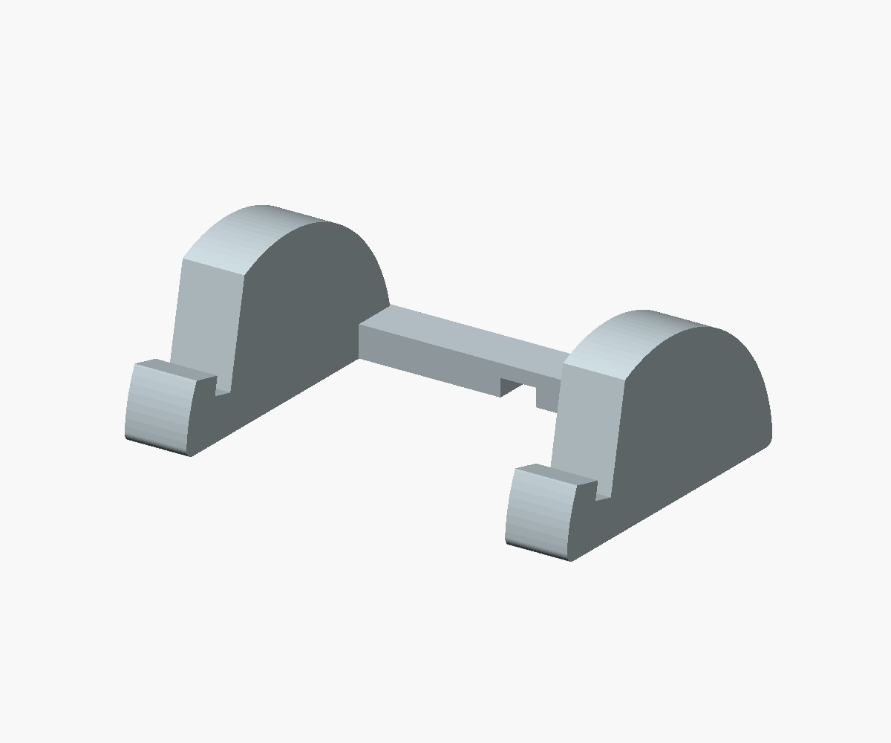
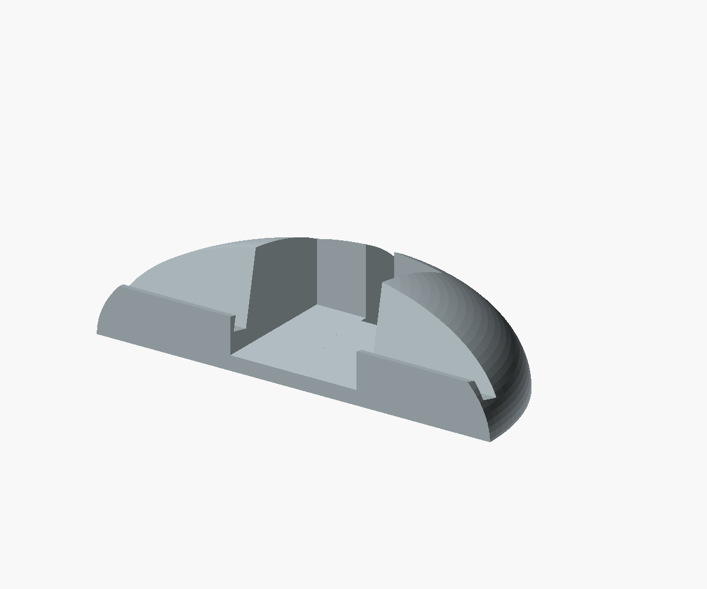
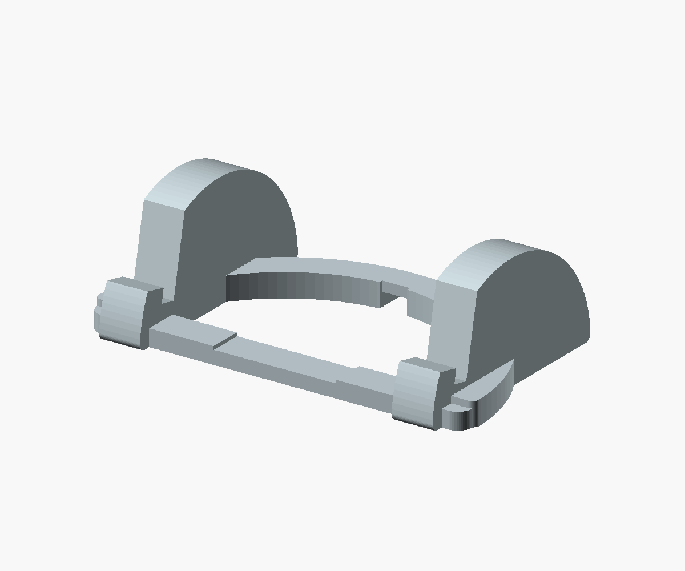

05 / Half-moon feet
Two semicircular supports, joined by a rear bar. The simplest evolution of the triangular feet.
Three softer shapes with semicircular backs. Switch views to see them with the screen and trace the rear cable route.

Two semicircular supports, joined by a rear bar. The simplest evolution of the triangular feet.

My pick for your direction: a semicircle from above, with a soft dome behind the display. The cable exits underneath.

A curved rear rail and rounded side supports. More open space around the Pi, with a lighter appearance.
Same 12° lean, low front lips and rear USB channel. These are editable OpenSCAD concept models; slot fit and contact points still need measurements from the assembled unit.